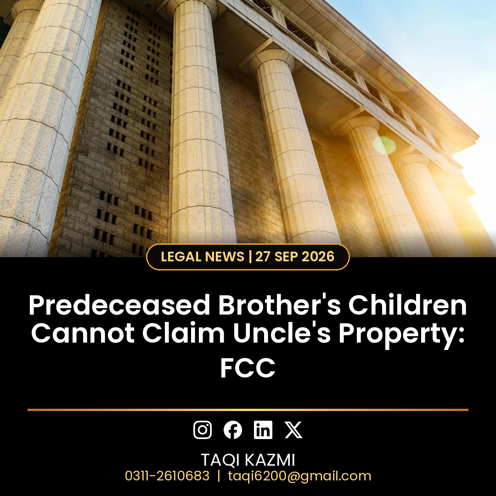

What the court decided
- The Federal Constitutional Court has ruled that Section 4 of the Muslim Family Laws Ordinance, 1961 protects only one class: where a son or daughter of the deceased dies before succession opens, their children step into their parent's share.
- It does not extend to the children of a predeceased brother. The court said the provision cannot be extended to other relatives through analogy or interpretation.
- A blood relationship alone does not automatically create an inheritance right; the claimant's legal status and the applicable rules of succession must also be considered.
- Under the traditional Hanafi law of inheritance, sharers and residuaries keep priority over distant kindred, and a predeceased brother does not pass a prospective share in his brother's estate to his children simply because he would have been an heir had he survived.
- Section 4 is a specific statutory exception to the general rules of Muslim inheritance and cannot be expanded beyond the relationship expressly covered by the law.
The key legal point
Section 4 exists to protect grandchildren who lost a parent early. It is not a general rule that every blood relative inherits. If your uncle dies and your father (his brother) had already died before him, this judgment says you cannot claim a share in your uncle's property under Section 4.
Background of the case
A two-member bench headed by Chief Justice Amin-ud-Din Khan with Justice Ali Baqar Najafi dismissed a petition filed by the legal heirs of Javed Iqbal Rana and upheld the Lahore High Court's decision dated 18 March 2026. The case concerned property in Lahore owned by Ejaz Ahmad Rana, who died childless in December 2018. The petitioners were the sons of his brother, who had died before him, and they claimed inheritance rights under Section 4 of the Muslim Family Laws Ordinance.
Urdu mein khulasa
Wirasat ke muqadmaat mein ye faisla bohat ahem hai. FCC ne wazeh kar diya ke Section 4 sirf beta ya beti ke bachon ko tahaffuz deta hai, bhai ke bachon ko nahi. Iska matlab, agar kisi ka bhai us se pehle fout ho jaye to bhai ke bache chacha ki jaidad mein hissa nahi maang sakte. Sirf khooni rishta wirasat ka haq nahi banata.
Agar aap ke khandan mein wirasat ka koi tanaza hai to durust qanooni rehnumai ke liye rabta karein: 0311-2610683